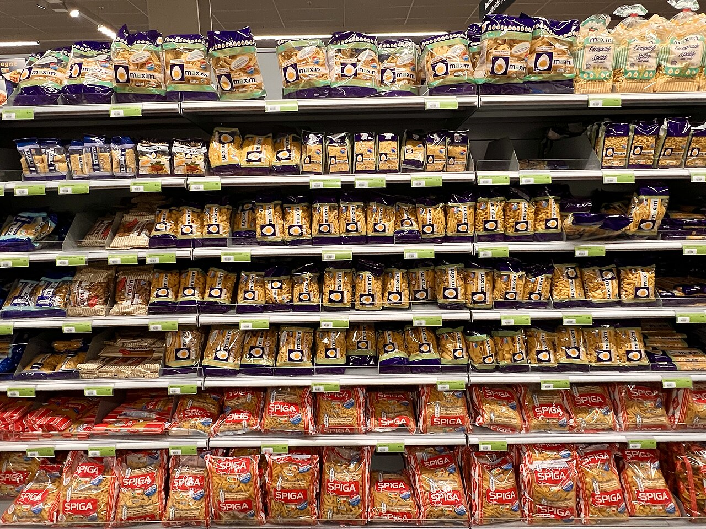
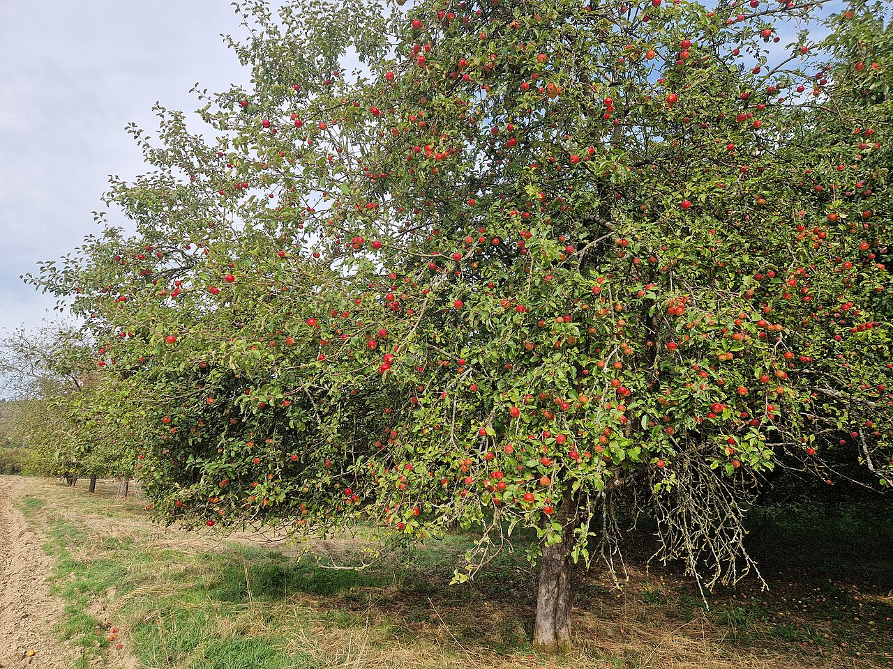

Bounding boxes
Rectangles around every object of interest, with class labels and attributes such as occlusion or truncation.
Object detection · YOLO · COCOFrom computer vision to large language models, the right labels make the difference between a demo and a model that works in the real world.
Rectangles around every object of interest, with class labels and attributes such as occlusion or truncation.
Object detection · YOLO · COCOPixel-accurate outlines for semantic, instance and panoptic segmentation when shape matters.
Segmentation · MasksLandmarks on people, faces, hands or products for pose estimation and measurement.
Pose · LandmarksSingle and multi-label tags for whole images: category, quality, content and moderation.
Classification · TaggingFrame-by-frame boxes with consistent object IDs, plus event and action labels on timelines.
Tracking · ActivityNamed entities, intent, sentiment, topics and relations for chatbots, search and analytics.
NER · Sentiment · IntentTranscription with timestamps, speaker diarization, sound events and language tags.
ASR · DiarizationKey-value extraction, tables and layout labels for invoices, receipts, forms and IDs.
OCR · Document AIPrompt-response writing, response ranking, rubric scoring, red-teaming and model evaluation.
Fine-tuning · EvaluationSample annotations on real photos and text. Use “Hide labels” to compare with the original.

maxim_pastamaxim_pastamaxim_pastamaxim_pastamaxim_pastamaxim_pastaspiga_pastaspiga_pastaspiga_pastaspiga_pastaprice_tagprice_tagprice_tagEvery product facing and price tag is boxed and labeled by brand or SKU. Retail teams use this data to train models for shelf audits, out-of-stock alerts and planogram checks.

appleappleappleappleappleappleappleappleappleappleappleappleappleappleappleappletrunkPolygons separate the tree canopy from the ground, while small boxes mark individual fruit. This combination trains models for yield estimation, harvest planning and orchard monitoring.
In video, each object keeps the same ID from frame to frame, so a model can learn motion and behavior, not just appearance. Interpolation speeds up the work and every track is reviewed.
00:00.4SPK_1Hi, I’m calling about my order from last week.00:05.8SPK_2Sure, could you share the order number, please?{
"invoice_no": "INV-2041",
"date": "2026-03-12",
"bill_to": "Acme Logistics",
"total": 48500,
"currency": "INR"
}The same careful process works across industries. Guidelines are adapted to each domain, and specialist data is handled under the client’s rules.
Vehicles, pedestrians, lanes, traffic signs and lights, tracked across video.
Shelf and SKU detection, product attributes, catalog tagging and visual search.
Crop and fruit counting, plant disease, weeds and drone field imagery.
De-identified medical images and clinical text, labeled to expert guidelines.
Invoices, receipts, bank statements and KYC documents for extraction models.
People and vehicle detection, crowd counting and incident events in CCTV.
Defect detection, assembly steps and grasp points for vision systems.
Intents, entities, chat transcripts, preference data and evaluations.
Safety labels, scene tags and brand or logo detection at scale.
Player tracking, ball events and body pose for coaching and analytics.

Python pipelines that generated and quality-checked about 1 million image pairs with tracked differences.

Structured, verified research data organized into a 17-tab report and dashboard.

AI enrichment, cleaning and deduplication of B2B records at scale.
Example photos via Wikimedia Commons: street scene by PattayaPatrol (CC BY-SA 4.0), pasta shelf by Bdx (CC0), apple orchard by Gerda Arendt (CC0). Annotations are illustrative samples. Names and amounts in the text examples are fictional.